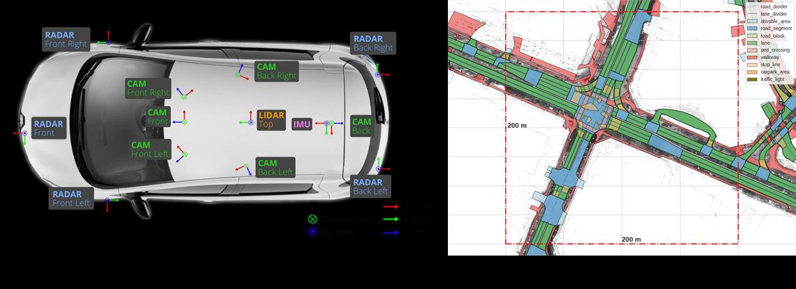
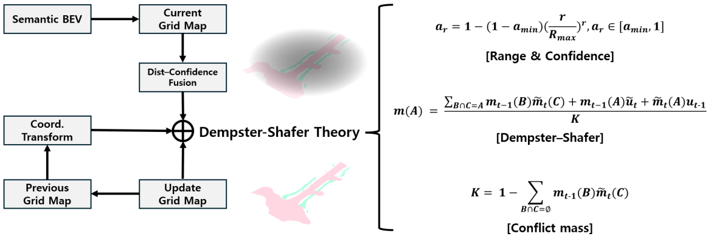

Overview
This project develops a semantic grid map method for analyzing drivable areas in urban environments. The system converts surround-view camera images into a bird's-eye-view (BEV) semantic segmentation, then fuses the results into a probabilistic occupancy grid map using Dempster-Shafer evidence theory.
The pipeline spans depth estimation via Pseudo-LiDAR, BEV segmentation using a novel Cross-Mamba Attention mechanism, DS-theory based temporal fusion, and real-time ROS deployment on embedded platforms including NVIDIA Jetson AGX Orin and Thor.
Model architecture
The BEV segmentation model (SegMam) replaces the conventional Transformer attention with a Cross-Mamba Attention module based on the Vision Mamba Selective State Space Model. This reduces quadratic computational complexity to linear while maintaining accuracy through multi-modal cross-attention over image features and depth features.
Depth information is obtained via Pseudo-LiDAR, which converts monocular depth estimation into 3D point cloud representation, enabling camera-only systems to approximate LiDAR-like spatial reasoning.

DS-theory probabilistic fusion
The semantic BEV predictions are fused over time using Dempster-Shafer evidence theory. A distance-based confidence weighting reduces over-confidence at far ranges, and temporal fusion via the Dempster combination rule accumulates evidence across frames to minimize conflict mass and improve grid map reliability.

Key results
- Drivable Area IoU
- 81.6%
- DS Fusion gain
- +1% IoU
- Labeled scenes
- 119
- OccupancyGrid
- 20 Hz
Evaluated on the nuScenes dataset with 119 KETI-labeled scenes. The DS fusion consistently improves IoU over single-frame predictions. The system is deployed as a ROS OccupancyGrid at 20 Hz, and has been optimized for embedded inference on Jetson AGX Orin (44 ms) and AGX Thor (22 ms) via ONNX and TensorRT.
Platform specifications
Sensors
- 6× surround-view cameras — 20 Hz
- 1× LiDAR (Velodyne) — 20 Hz
- GPS / RTK positioning
- IMU — 200 Hz
Output interface
- nav_msgs/OccupancyGrid — ROS message
- 0.3 m cell resolution
- 200 × 120 grid cells
- 20 Hz publication rate
Deployment
- NVIDIA Jetson AGX Orin — 44 ms
- NVIDIA AGX Thor — 22 ms
- ONNX + TensorRT optimization
- KIAPI certified evaluation